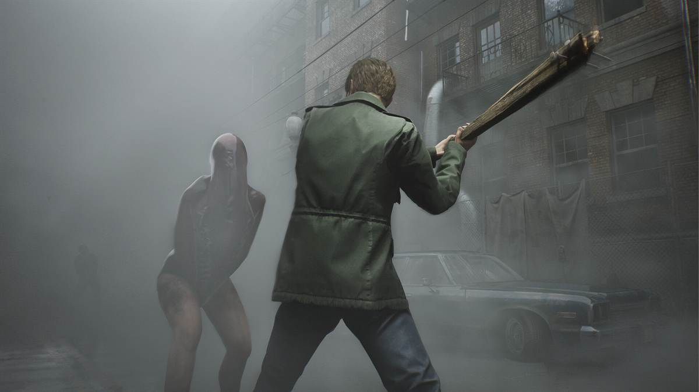
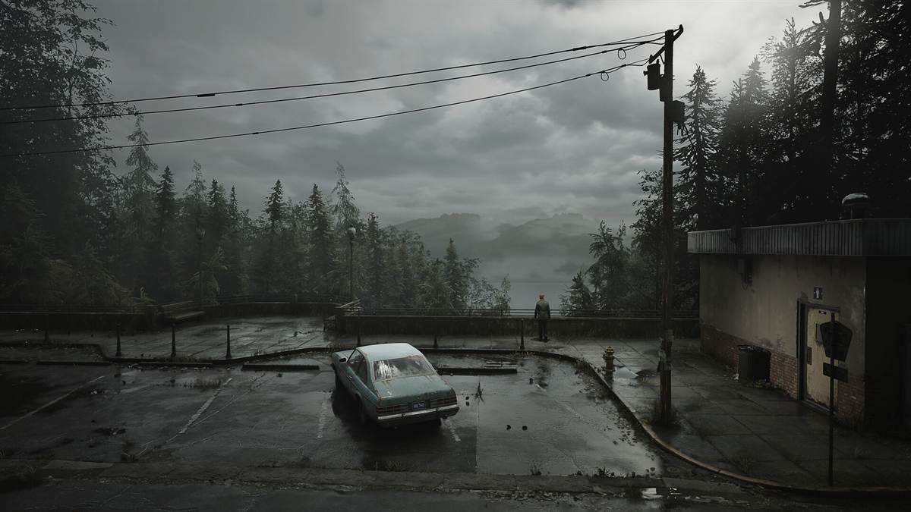
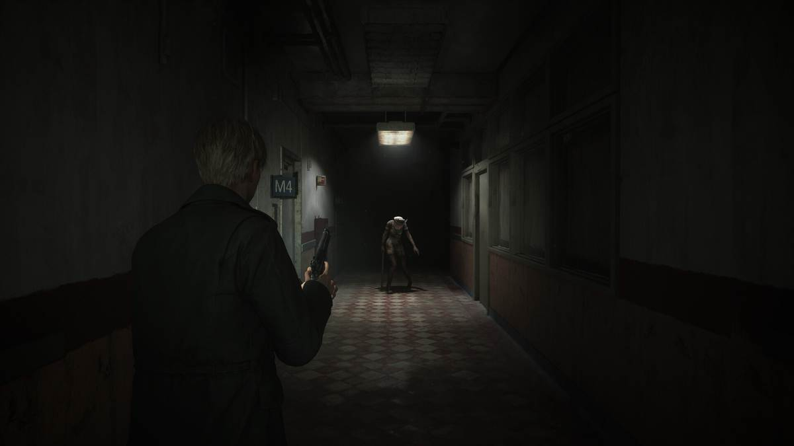

Por que estas dos
Conoci Silent Hill 2 primero y un tiempo despues jugue Silent Hill 3. Las dos me gustaron, pero por cosas diferentes.
La 2 va de la culpa de un hombre que baja a un pueblo a buscar a su esposa, sabiendo que ella ya murio. La 3 va de una chica que sale de compras, vuelve a casa y descubre que su padre esta en el hospital y que nada de lo que sabia sobre ella era cierto.
Silent Hill como lugar es practicamente el mismo en las dos: la niebla, el radio que suena cuando algo esta cerca, las puertas que no abren y el pueblo abandonado que de pronto se convierte en otra cosa. Lo que cambia es para que lo usan. En la 2 el pueblo funciona como un castigo. En la 3 funciona como una revelacion.
La comparativa
Ficha rapida, punto por punto, con lo que yo senti al jugarlos en ese orden.
Protagonista
James Sunderland. Recibe una carta de su esposa, que murio hace tres anos.
Heather Mason. Va por la calle y de pronto ya no esta en el mundo que conocia.
Tono
Lento y triste. Da mas pena que miedo.
Mas agresivo y mas rapido. Aca si hay sustos.
Camara
Original con camara fija desde arriba. En el remake de 2024 es al hombro.
Fija desde arriba, con angulos que te obligan a doblar una esquina sin ver que hay del otro lado.
Combate
Poca municion y golpes torpes. El tubo de plomo es el arma de todo el juego.
Mas variedad de armas, pero el inventario sigue siendo pequeno a proposito.
Monstruos
Pyramid Head y las enfermeras. Todos dicen algo de lo que James carga.
Figuras con sangre y doctores. Van con el hospital y con el cuerpo de Heather.
Duracion
Entre 8 y 10 horas.
Entre 5 y 6 horas.
Finales
Varios, y no se desbloquean eligiendo opciones sino jugando.
Tres.
Cancion
Theme of Laura.
You're Not Here.
El remake de 2024
Me lo pase completo. Es la razon por la que volvi a jugar la saga entera.
Bloober Team cambio la camara fija por una al hombro y le metio muchisimo mas detalle al pueblo, pero no toco lo que importaba: la niebla, el radio, las puertas que se cierran solas y el hecho de que nunca sabes si el pueblo te esta mostrando algo o te esta mintiendo.
Lo que menos me convence es el combate, que ahora es mas facil que en el original y te deja esquivar todo. Aun asi hay escenas que en 2024 funcionan peor que en 2001, y otras que funcionan mucho mejor, sobre todo cuando entras a un edificio que ya conocias y esta completamente distinto.



Capturas mias
Aca van las capturas que tome jugando, para que se note que el juego esta jugado y no solo visto en videos.
sube tu imagen a img/
sube tu imagen a img/
La musica
Akira Yamaoka hizo el sonido de casi toda la saga. Su nombre esta tan pegado a Silent Hill como el de la niebla: el industrial de bajo, las guitarras lejanas y el silencio largo entre una pista y otra son los que hacen que el pueblo se sienta vacio de verdad.
Theme of Laura es la unica cancion de un videojuego que me pone incomodo sin que pase nada en pantalla.
Juan Andres
Volver
Esta pagina es una de mis dos paginas de fan dentro de mi hoja de vida. La otra va de Bring Me The Horizon.